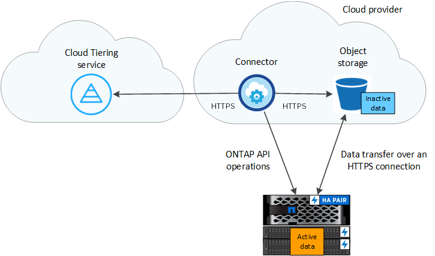

了解 Cloud Tiering
提供者
 下载此页面的 PDF
下载此页面的 PDF
NetApp 的云分层服务可将内部 ONTAP 集群中的非活动数据自动分层到对象存储，从而将您的数据中心扩展到云。这样可以在集群上腾出宝贵的空间来处理更多工作负载，而无需更改应用程序层。云分层可以降低数据中心的成本，并支持从 CAPEX 模式切换到 OPEX 模式。
FabricPool 分层服务利用了 Cloud Tier 的功能。FabricPool 是一种 NetApp Data Fabric 技术，可将数据自动分层到低成本的对象存储。活动数据保留在高性能 SSD 上，而非活动数据则分层到低成本对象存储，同时保持 ONTAP 数据效率。
功能
Cloud Tiering 提供自动化，监控，报告和通用管理界面：
-
借助自动化，可以更轻松地设置和管理从内部 ONTAP 集群到云的数据分层
-
通过一个管理平台，无需在多个集群之间独立管理 FabricPool
-
报告显示每个集群上的活动和非活动数据量
-
分层运行状况可帮助您发现并更正出现的问题
-
如果您使用的是 Cloud Volumes ONTAP 系统，则可以在集群信息板中找到这些系统，以便您全面了解混合云基础架构中的数据分层

Cloud Volumes ONTAP 系统是从云分层进行的只读系统。 "您可以在 Cloud Manager 的工作环境中为 Cloud Volumes ONTAP 设置分层"。
有关 Cloud Tiering 所提供价值的更多详细信息， "查看 NetApp Cloud Central 上的 Cloud Tiering 页面"。

|
虽然云分层可以显著减少存储占用空间，但它不是备份解决方案。 |
支持的对象存储提供程序
您可以将非活动数据从 ONTAP 集群分层到 Amazon S3 ， Microsoft Azure Blob 存储， Google 云存储或 StorageGRID （私有云）。
定价和许可证
通过按需购买订阅，名为 Cloud Tier 的 ONTAP 分层许可证或两者的组合为 FabricPool 分层付费。如果您没有许可证，则可以为第一个集群免费试用 30 天。
将数据分层到 StorageGRID 时不收取任何费用。无需 BYOL 许可证或 PAYGO 注册。
30 天免费试用
如果您没有 FabricPool 许可证，则在为第一个集群设置分层时，将开始免费试用 30 天的 Cloud Tiering 。30 天免费试用结束后，您需要通过按需购买订阅， FabricPool 许可证或两者的组合为 Cloud Tiering 付费。
如果免费试用结束，并且您尚未订阅或添加许可证，则 ONTAP 将不再将冷数据分层到对象存储，但现有数据仍可供访问。
按需购买订阅
Cloud Tiering 以按需购买模式提供基于消费的许可。通过云提供商的市场订阅后，您可以按 GB 为分层数据付费，无需预先支付费用。您的云提供商会通过每月账单向您开具账单。
即使您拥有免费试用版或自带许可证（ BYOL ），也应订阅：
-
订阅可确保在免费试用结束后不会中断服务。
试用结束后，系统将根据您分层的数据量按小时收取费用。
-
如果您分层的数据超过 FabricPool 许可证允许的数量，则数据分层将通过按需购买订阅继续进行。
例如，如果您拥有 10 TB 许可证，则超过 10 TB 的所有容量均通过按需购买订阅付费。
在免费试用期间，或者如果您未超过 FabricPool 许可证，则不会从按需购买订阅中收取任何费用。
自带许可证
通过从 NetApp 购买 ONTAP FabricPool 许可证来自带许可证。您可以购买基于期限的许可证或永久许可证。
购买 FabricPool 许可证后，您需要将其添加到集群中， "您可以直接从 Cloud Tiering 执行此操作"。
通过 Cloud Tiering 激活许可证后，如果您稍后再购买附加容量，则集群上的许可证将自动更新为新容量。无需将新的 NetApp 许可证文件（ NLF ）应用于集群。
如上所述，我们建议您设置按需购买的订阅，即使您的集群具有 BYOL 许可证也是如此。
mailto ： ng-cloud-tiering@netapp.com ？ Subject=Licensing[ 请联系我们购买许可证 ] 。
Cloud Tiering 的工作原理
Cloud Tiering 是一项由 NetApp 管理的服务，它使用 FabricPool 技术自动将内部 ONTAP 集群中的非活动（冷）数据分层到公有云或私有云中的对象存储。可从连接器连接到 ONTAP 。
下图显示了每个组件之间的关系：

从较高的层面来看， Cloud Tiering 的工作原理如下：
-
您可以从 Cloud Manager 发现内部集群。
-
您可以通过提供有关对象存储的详细信息来设置分层，包括存储分段 / 容器以及存储类或访问层。
-
Cloud Manager 将 ONTAP 配置为使用对象存储提供程序，并发现集群上的活动和非活动数据量。
-
您可以选择要分层的卷以及要应用于这些卷的分层策略。
-
一旦数据达到可视为非活动的阈值（请参见）， ONTAP 就会开始将非活动数据分层到对象存储 [Volume tiering policies]）。
对象存储
每个 ONTAP 集群会将非活动数据分层到一个对象存储。设置数据分层时，您可以选择添加新的分段 / 容器或选择现有分段 / 容器以及存储类或访问层。
卷分层策略
选择要分层的卷时，您可以选择一个 _volume 分层策略 _ 以应用于每个卷。分层策略可确定卷的用户数据块何时或是否移动到云。
- 无分层策略
-
将卷上的数据保留在性能层中，以防止将其移动到云。
- 冷快照（仅限 Snapshot ）
-
只有在聚合容量达到 50% 且数据达到冷却期后，才会对数据进行分层。默认冷却天数为 2 ，但您可以调整天数。
如果性能层容量大于 70% ，则从云层写入到性能层将被禁用。如果发生这种情况，则直接从云层访问块。 - 冷用户数据（自动）
-
如果通过随机读取进行读取，则云层上的冷数据块将变得很热，并移至性能层。如果通过顺序读取（例如与索引和防病毒扫描相关的读取）进行读取，则云层上的冷数据块将保持冷状态，不会写入性能层。
只有在聚合容量达到 50% 且数据达到冷却期后，才会对数据进行分层。冷却期是指卷中的用户数据必须保持非活动状态才能被视为 " 冷 " 数据并移至对象存储的时间。默认冷却天数为 31 ，但您可以调整天数。
如果性能层容量大于 70% ，则从云层写入到性能层将被禁用。如果发生这种情况，则直接从云层访问块。 - 所有用户数据（全部）
-
如果读取，则云层上的冷数据块将保持冷状态，不会回写到性能层。此策略从 ONTAP 9.6 开始可用。
在选择此分层策略之前，请考虑以下事项：
-
分层数据可立即降低存储效率（仅实时）。
-
只有在确信卷上的冷数据不会发生更改时，才应使用此策略。
-
对象存储不属于事务处理，如果发生更改，则会导致严重的碎片化。
-
在将所有分层策略分配给数据保护关系中的源卷之前，请考虑 SnapMirror 传输的影响。
由于数据会立即分层，因此 SnapMirror 将从云层而非性能层读取数据。这样会导致 SnapMirror 操作速度变慢—可能会使队列中的其他 SnapMirror 操作变慢，即使这些操作使用不同的分层策略也是如此。
-
- 所有 DP 用户数据（备份）
-
此策略适用于 ONTAP 9.5 或更早版本。从 ONTAP 9.6 开始，此策略已替换为 * 所有 * 分层策略。
 编辑这个页面
编辑这个页面